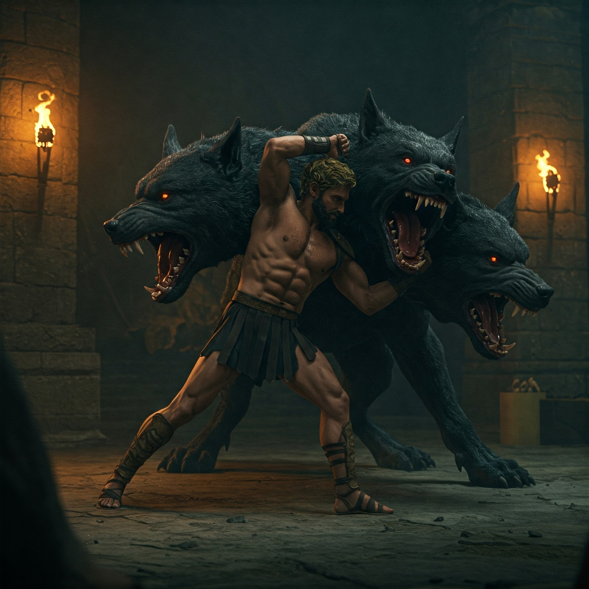

El aire espeso del Inframundo te sofoca mientras descendés por la grieta de Taenarum. El río Aqueronte gime con los suspiros de los muertos, y las sombras se aferran a tus tobillos como garras. Al final del camino, tras las Puertas de Ébano, Cerbero aguarda: tres pares de ojos brillando en la oscuridad, sus fauces goteando un veneno que disuelve almas.
Hades emerge de un manto de niebla, su corona de huesos crujiendo:
"Ningún vivo ha cruzado mis dominios y conservado su cordura... ¿Estás preparado para pagar el precio, pretendiente de héroes?"
¿Qué harás?
